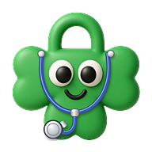

Dockit: The Doctor’s Kit
Terms of Use
Last updated: 12 November 2026
1. About these terms
By tapping “I agree and continue” in Dockit, you accept these terms and our Privacy Policy. If you don’t agree, please don’t use Dockit. Dockit is made by NEEV Student Start-up Team. Contact: dockitapp.in@gmail.com.
2. Not medical advice
- Dockit is not a medical device. It does not diagnose, treat, cure or prevent any medical condition.
- Colours, severity words, charts, the health snapshot and typical-range notes are only to help you organise and share your records. They are not a medical opinion.
- Dockit does not check medicine doses. Follow your doctor’s and pharmacist’s instructions.
- Never delay or skip medical care because of something in Dockit. In an emergency, call 112 (India) or your local emergency number.
- The helpline notes in the app are for information. They are not a counselling service run by us.
3. Who can use Dockit
Dockit is not designed for children under 13. If you are under 18, please use Dockit only with the permission of a parent or guardian. Professional mode is meant for doctors, clinics and other care professionals.
4. Your account and data
- You are responsible for your password and for who can use your unlocked phone.
- With an online account, your data is saved on your phone and in your account on our server (Supabase, Mumbai, India), so you can open it on any phone. It is encrypted by our provider but is not end-to-end encrypted, and the developer can technically access it. The Privacy Policy explains this in full.
- Syncing needs an internet connection. If you change data on two phones at once, Dockit will ask you which version to keep, and the version you do not keep can be lost. Please keep backups.
- With a local account, your data stays on your phone only. If you uninstall Dockit or clear its data, it is gone.
- You can delete your account and data at any time from Profile → Delete my account and data. This cannot be undone.
5. Professional mode
If you use Dockit as a professional, you are responsible for having permission to keep patient information, for following the rules that apply to your work, and for the notes you enter. Patient notes you enter are saved to your account on our server. Dockit is a new pilot, so until we tell you otherwise, please use demo or dummy patient information only. Do not keep identifiable patient information on a shared or unlocked phone. Your Doctor Card details are shown to others only when you choose to share them.
6. Linking a doctor and a patient
- A link needs both people to agree. The doctor creates a one-time invite code (or QR code), and the patient accepts it by typing or scanning it. The code works once and expires after 2 days. Don’t share it publicly.
- Once linked, the doctor can add medicine plans to the patient’s account, and both can see them. Only the doctor can change a plan. The doctor can see which doses the patient marked as taken or missed only while the patient keeps this switched on. The patient can switch it off, or end the link, at any time.
- A plan is only information the doctor entered. Dockit does not check it. Follow your doctor’s and pharmacist’s instructions.
- “Missed” means a dose that was not ticked in the app. The patient may simply have forgotten to tick it. Dockit does not send emergency alerts, so please don’t rely on it to watch over a patient.
- Doctors stay responsible for what they enter and for their professional duties towards their patients.
7. Reviews
- A review you post is public. Everyone using Dockit can read it, with the name you choose to show.
- Don’t put health details or other people’s private information in a review, and don’t post anything abusive or misleading. We may hide a review that breaks this.
- You can delete your own review at any time. It is also deleted if you delete your account.
8. Using Dockit properly
- Enter information that is true to the best of your knowledge.
- Don’t use Dockit to harm or mislead anyone, to break the law, or to try to break into the app or other people’s accounts.
- Only share a person’s health information if you have their permission.
9. Availability and changes to Dockit
Dockit is a young app run on free services. It may change, have bugs, be slow, or be unavailable at times, and the online service may pause or stop. We may add, change or remove features, including sync, reminders and notifications. We will try to keep your data safe, but we cannot promise that Dockit will always work without errors.
10. Limits on responsibility
Dockit is provided “as is”. To the extent the law allows, we are not responsible for loss or harm that comes from relying on information in Dockit instead of professional medical advice, from lost or unsynced data, or from missed reminders or notifications. Nothing in these terms limits any rights you have by law that cannot be limited.
11. Changes to these terms
If we change these terms in an important way, we will update the date above and ask you to agree again in the app.
12. Contact
Questions about these terms: dockitapp.in@gmail.com